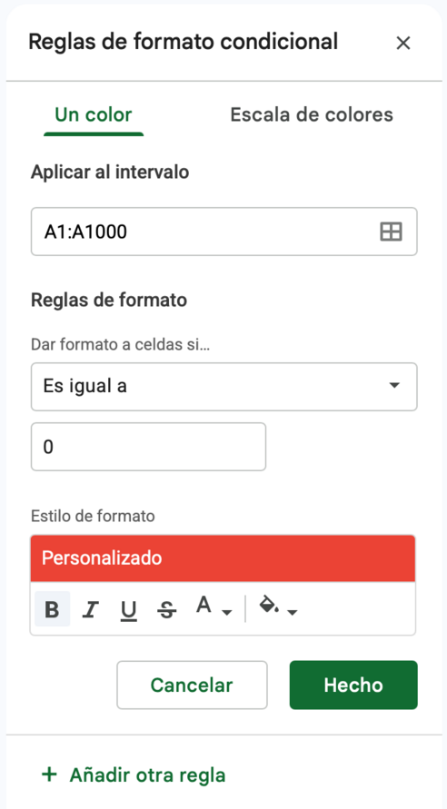

Qué es una fórmula
Hasta acá la planilla guardó datos. Ahora va a calcular. Una fórmula es una instrucción que empieza con el signo = y le dice a la celda qué operación hacer. La celda muestra el resultado y la barra de fórmulas guarda la instrucción.
| Operador | Operación | Ejemplo |
|---|---|---|
+ | Suma | =B2+B3 |
- | Resta | =B2-B3 |
* | Multiplicación | =G2*7 |
/ | División | =K2/30 |
^ | Potencia | =B2^2 |
( ) | Paréntesis: lo que está adentro se calcula primero | =(B2+B3)/2 |
⚠️ El orden importa
Primero se resuelven los paréntesis, después las potencias, después multiplicaciones y divisiones, y al final sumas y restas. Por eso =2+3*4 da 14 y =(2+3)*4 da 20. Ante la duda, usá paréntesis.
Lo valioso de una fórmula es que apunta a celdas, no a números. Si escribís =G2*7 y después cambiás el valor de G2, el resultado se actualiza solo.
| G | H | K | L | |
|---|---|---|---|---|
| 1 | Horas_celular | Viaje_min | Gasto_mensual | Cel_semana |
| 2 | 2 | 87 | 66000 | 14 |
| 3 | 4 | 57 | 157000 | 28 |
| 4 | 6 | 10 | 67000 | 42 |
La columna L calcula las horas de celular por semana a partir de la columna G. Cambiá un dato de G y la fila se recalcula.
Copiar una fórmula a toda la columna
No hace falta escribir la fórmula 120 veces. Escribila en la primera fila y arrastrá el controlador de relleno hacia abajo, o hacé doble clic sobre él para que se extienda hasta donde llegan los datos de la columna vecina. Sheets ajusta solo las referencias: en la fila 3 la fórmula pasa a ser =G3*7, en la 4 =G4*7, y así.
Copiar, cortar y pegado especial
Ctrl+C copia, Ctrl+X corta y Ctrl+V pega todo: el valor, la fórmula y el formato. Cuando solo querés una parte, usás Editar → Pegado especial.
| Pegado especial | Qué pega | Cuándo se usa |
|---|---|---|
Solo valores (Ctrl+Mayús+V) | El resultado, sin la fórmula | Para "congelar" un resultado que no querés que cambie más |
| Solo formato | El aspecto, sin el contenido | Para repetir un estilo en otro rango |
| Solo fórmula | La fórmula, sin el formato | Para copiar el cálculo y conservar el aspecto de destino |
| Transpuesto | Las filas pasan a ser columnas y viceversa | Para girar una tabla |
Tu primera fórmula
- Abrí tu archivo Retrato del curso (el de trabajo, no la copia que entregaste). Creá una hoja
PRACTICAy copiá en ella las primeras 8 respuestas: seleccionáDATOS!A1:K9, copiá y pegá con Pegado especial → Solo valores (Ctrl+Mayús+V). - En
L1escribíCel_semanay enL2la fórmula=G2*7. Copiala hasta la fila 9 con doble clic en el controlador. Controles: 14, 28, 42, 49, 63, 7, 7 y 28. - En
M1escribíGasto_diarioy enM2la fórmula=K2/30, copiada hasta el final y con formato de moneda. - Repaso de la clase anterior: dale a los encabezados de las dos columnas nuevas el mismo estilo que al resto y ajustá el ancho.
- Cambiá a mano el valor de
G2y mirá cómo se recalculaL2. Volvé al valor original conCtrl+Z.
Funciones: de las fórmulas a las funciones
Una función es una fórmula ya armada que Sheets trae incorporada. Se escribe con un nombre, seguido de paréntesis con lo que necesita (los argumentos): =PROMEDIO(D2:D121). Cuando hay más de un argumento, en Argentina se separan con punto y coma (;).
| Función | Qué hace | Ejemplo |
|---|---|---|
SUMA | Suma los números del rango | =SUMA(K2:K121) |
PROMEDIO | Promedia los números del rango (ignora las celdas vacías) | =PROMEDIO(D2:D121) |
MAX y MIN | El mayor y el menor valor del rango | =MAX(K2:K121) |
CONTAR | Cuenta las celdas que tienen un número | =CONTAR(H2:H121) |
CONTARA | Cuenta las celdas que tienen cualquier cosa: número o texto | =CONTARA(C2:C121) |
El botón de autosuma
El botón Σ de la barra de herramientas abre un menú con las funciones más usadas (SUMA, PROMEDIO, CONTAR, MAX, MIN). Si te parás en una celda vacía debajo de una columna de números, Sheets adivina el rango. Revisá siempre que haya adivinado bien antes de confirmar.
Referirse a otra hoja
Para usar datos de otra hoja se escribe el nombre de la hoja, un signo de admiración y la celda o el rango: =PROMEDIO(DATOS!D2:D121). Si estás escribiendo la fórmula y hacés clic en la otra hoja, Sheets arma la referencia solo.
CONTAR y CONTARA no son lo mismo
Esta diferencia sirve para detectar problemas en los datos. CONTARA sobre la columna de Carrera da 120, porque hay 120 textos. CONTAR sobre esa misma columna da 0, porque no hay ningún número. Y sobre Viaje_min, CONTARA y CONTAR dan 115 las dos: hay 5 celdas vacías y las dos funciones las saltean.
| A | B | |
|---|---|---|
| 2 | Indicador | Valor |
| 3 | Respuestas | 120 |
| 4 | Con dato de viaje | 115 |
| 5 | Edad promedio | 24,24 |
| 6 | Gasto promedio | $ 127.016,67 |
| 7 | Gasto máximo | $ 220.000,00 |
Así debería quedar la hoja RESUMEN al terminar la actividad. Estas cifras son los valores de control para saber si tus fórmulas están bien.
💡 Vacío no es cero
El promedio de Viaje_min es 55,48 minutos, calculado sobre las 115 respuestas que tienen dato. Si en la clase anterior hubieras escrito 0 en los 5 vacíos, el promedio bajaría a 53,17: un número que parece razonable pero es falso. Dejar el vacío fue la decisión correcta.
Funciones sobre 8 filas
- En
PRACTICA, desdeA12, escribí estos nombres:Edad promedio,Gasto máximo,Gasto mínimo,Con dato de viaje,Carreras cargadasyPrueba CONTAR en carrera. - En la columna B escribí una función para cada uno, siempre sobre las filas 2 a 9:
PROMEDIOdeD,MAXyMINdeK,CONTARdeH,CONTARAdeCyCONTARdeC. - Controles: 26,75, $ 180.000, $ 53.000, 8, 8 y 0. Explicá por qué
CONTARsobre las carreras da 0. - Con 8 filas podés comprobar a mano: sumá el gasto con la autosuma
Σ(tendría que dar $ 848.000) y dividí por 8: el promedio es $ 106.000. Dale el formato que corresponde: moneda para los gastos y dos decimales para el promedio. - Repetí el promedio de edad apuntando a otra hoja:
=PROMEDIO(DATOS!D2:D9). Tiene que dar lo mismo.
Errores: leer lo que la planilla te dice
Cuando una fórmula no puede calcular, la celda muestra un error que empieza con #. Un error no rompe la planilla: te está diciendo qué pasó. Aprender a leerlos ahorra mucho tiempo.
| Error | Qué significa | Cómo se provoca y cómo se arregla |
|---|---|---|
#DIV/0! | Se dividió por cero o por una celda vacía | =K2/0. Revisá el divisor. |
#VALUE! | La fórmula espera un número y encontró un texto | =C2+1. Revisá que las celdas sean números. |
#NAME? | Sheets no reconoce un nombre de función | =PROMEDI(D2:D121). Revisá cómo escribiste la función. |
#REF! | La referencia apunta a algo que ya no existe | Eliminar una hoja o columna que una fórmula usaba. Rehacé la referencia. |
#N/A | Un dato buscado no está disponible | Aparece al buscar algo que no se encuentra en una tabla. |
Ver las fórmulas, no los resultados
Con Ver → Mostrar → Fórmulas (o Ctrl+`) la hoja muestra el texto de cada fórmula en vez de su resultado. Sirve para revisar de un vistazo una columna entera. Al hacer doble clic en una celda con fórmula, Sheets además marca con colores las celdas de las que depende.
Provocar errores para aprender a leerlos
- Creá una hoja
PRUEBAS. EnA1escribí=PRACTICA!K2/0y anotá qué error aparece. - En
A2escribí=PRACTICA!C2+1y enA3=PROMEDI(PRACTICA!D2:D9). Anotá los errores. - Corregí
A3para que funcione y confirmá que da 26,75. - Activá Ver → Mostrar → Fórmulas, mirá
PRACTICAy volvé a desactivarlo.
Porcentajes, potencias y parámetros
Un porcentaje es una proporción: qué parte es de qué total. En una planilla se calcula dividiendo y después se le da formato de porcentaje. Para eso hay que tener claro cuál es la parte y cuál es el total.
| Quiero saber... | Fórmula | Ejemplo del caso |
|---|---|---|
| Qué porcentaje es una parte del total | =parte/total | Respuestas sin dato de viaje: =(B3-B4)/B3 da 4,17% |
| Cuánto es el X% de un valor | =valor*porcentaje | El 10% del gasto: =K2*10% |
| Cuánto queda tras aumentar un X% | =valor*(1+porcentaje) | Gasto con un aumento del 3%: =K2*(1+3%) |
| De cuánto fue la variación | =(nuevo-viejo)/viejo | De $ 100.000 a $ 115.000: =(115000-100000)/100000 da 15% |
⚠️ El formato % multiplica por 100
Si ya escribiste 0,03 y le das formato de porcentaje, se ve 3%, y está bien. Pero si escribís 3 y después aplicás el formato, se ve 300%. Primero el dato, después el formato, y revisá siempre qué número quedó.
Proyectar con potencias
Cuando algo crece un porcentaje fijo cada período, no se suma: se multiplica cada vez. Si el gasto sube un 3% por mes, a los 6 meses vale gasto*1,03^6. Eso se escribe con la función POTENCIA: =K2*POTENCIA(1+3%;6). Su pariente es RAIZ: =RAIZ(16) da 4, y es lo mismo que =POTENCIA(16;1/2).
Esa misma idea permite pasar una tasa anual a una mensual equivalente: =POTENCIA(1+anual;1/12)-1. Una inflación del 40% anual equivale a un 2,84% mensual, no a 40/12 = 3,33%.
Una hoja de parámetros
Los números que van a cambiar (la inflación, los meses) no se escriben dentro de las fórmulas: se guardan en celdas de una hoja aparte y las fórmulas apuntan ahí. Así, para probar otro escenario cambiás una sola celda y se recalcula todo.
| A | B | |
|---|---|---|
| 1 | Parámetro | Valor |
| 2 | Inflación anual | 40% |
| 3 | Inflación mensual equivalente | 2,84% |
| 4 | Meses a proyectar | 6 |
La hoja PARAMETROS. Las celdas amarillas son datos que se cambian a mano; la verde es una fórmula.
Porcentajes y potencias
- En
PRACTICA, enN1escribíCon_aumentoy enN2=K2*(1+3%), copiada hasta la fila 9.N2tiene que dar $ 67.980. - En
O1escribíVariaciony enO2=(N2-K2)/K2, con formato de porcentaje y copiada. Tiene que dar 3,00% en todas. - En
P1escribíProyeccion_6my enP2=K2*POTENCIA(1+3%;6), copiada hasta la 9.P2tiene que dar $ 78.807,45. - Creá una hoja
PARAMETROScon los encabezadosParámetroyValorenA1:B1. EnA2escribíInflación anualy enB240%. EnA3escribíInflación mensual equivalentey enB3=POTENCIA(1+B2;1/12)-1, con porcentaje y dos decimales. Tiene que dar 2,84%.
Referencias relativas, absolutas y mixtas
Este es el error más común con las planillas. Cuando copiás una fórmula, Sheets mueve las referencias junto con ella: es lo que querías con G2 y G3, pero no con una celda de parámetros que tiene que quedarse quieta. Hay tres tipos de referencia.
| Tipo | Cómo se escribe | Al copiar la fórmula |
|---|---|---|
| Relativa | B3 | Se mueve en filas y columnas |
| Absoluta | $B$3 | No se mueve nunca: queda fija en fila y columna |
| Mixta | $B3 o B$3 | Fija la columna o fija la fila, pero la otra parte se mueve |
El signo $ se puede escribir a mano, pero es más rápido seleccionar la referencia dentro de la fórmula y apretar F4, que va rotando entre B3, $B$3, B$3 y $B3. En Mac, si F4 no responde, usá ⌘+T.
| A | B | C | D | |
|---|---|---|---|---|
| 1 | Meses | 2% | 3% | 5% |
| 2 | 1 | $ 129.557 | $ 130.827 | $ 133.368 |
| 3 | 2 | $ 132.148 | $ 134.752 | $ 140.036 |
| 4 | 3 | $ 134.791 | $ 138.794 | $ 147.038 |
Una sola fórmula escrita en la celda de arriba a la izquierda y copiada a toda la tabla: $A fija la columna de los meses, B$1 fija la fila de los porcentajes.
Referencias que se corren y referencias que se fijan
- En
PARAMETROS, enA4escribíMeses a proyectary enB46. - En
PRACTICA, enQ1escribíProy_paramy enQ2=K2*POTENCIA(1+PARAMETROS!B3;PARAMETROS!B4). Copiala hasta la fila 9. MiráQ3: la fórmula apunta aB4yB5. Las referencias se corrieron y el resultado está mal. - Corregí
Q2con referencias absolutas ($B$3y$B$4, conF4) y copiala de nuevo.Q2tiene que dar $ 78.092,25. - Calculá el gasto promedio en
K11con=PROMEDIO(K2:K9). Armá la tabla de escenarios: enA20Meses, enB20yC20los porcentajes3%y5%, y enA21:A23la serie de 1 a 3 con el controlador. - En
B21escribí una única fórmula con referencias mixtas:=$K$11*POTENCIA(1+B$20;$A21), y copiala a toda la tabla. Controles:B21$ 109.180,B23$ 115.829,06 yC23$ 122.708,25.
Formato condicional
El formato condicional hace que una celda cambie de aspecto cuando se cumple una condición. Es la manera de que los datos que importan salten a la vista sin tener que recorrer 120 filas.
Se abre desde Formato → Formato condicional. Seleccionás el rango, elegís la condición y el estilo. Hay dos pestañas: Un color, que pinta las celdas que cumplen una regla, y Escala de colores, que degrada el color según el valor, del mínimo al máximo.

El panel de reglas. En este ejemplo se aplica a la columna A y pinta de rojo las celdas iguales a 0. En tu archivo vas a cambiar el intervalo y la condición.
Pintar toda la fila con una fórmula
Para pintar una fila entera según el valor de una columna, se elige La fórmula personalizada es y se escribe una condición con referencia mixta. Para marcar todas las filas donde Trabaja dice Sí: rango A2:K121 y fórmula =$E2="Sí". El $ fija la columna E; el 2 queda libre para que la regla se evalúe fila por fila.
💡 La misma idea de siempre
La referencia mixta de la regla es exactamente la que usaste en la tabla de escenarios. Entender una vez la diferencia entre $E2 y E$2 te sirve en todos lados.
Resaltar lo que importa
- En
PRACTICA, seleccioná la columnaH(Viaje_min), abrí Formato → Formato condicional, elegí Es mayor que90y un relleno rojo claro. Tienen que quedar 2 celdas marcadas (106 y 93). - Seleccioná
K2:K9y aplicá una Escala de colores de blanco a verde. ¿Cuál es el gasto más oscuro? - Seleccioná
A2:K9y creá una regla con La fórmula personalizada es=$E2="Sí", con relleno amarillo suave. Tienen que pintarse 5 filas enteras. - Probá cambiar
E2deSíaNoy mirá cómo se despinta la fila. Volvé conCtrl+Z.
Pegar solo valores y cerrar la clase
Tu archivo cambia cada vez que cambiás un parámetro. A veces conviene guardar una foto del resultado en un momento dado, que no cambie más. Para eso sirve pegar solo valores.
Sacar una foto
- En
PRACTICA, seleccionáA12:B17y copialo conCtrl+C. - Creá una hoja
FOTOy pegá con Pegado especial → Solo valores. Comprobá que la barra de fórmulas muestra un número y no una fórmula. - Cambiá el gasto de
K2enPRACTICAa100000. Mirá que los indicadores cambiaron y laFOTOno. Volvé al valor original conCtrl+Z.
El pedido de la clase
Practicaste todas las técnicas sobre 8 filas, donde podés comprobar cada cifra a mano. Ahora las aplicás sobre las 120 respuestas reales. Este es el trabajo que se entrega: un solo archivo que sirve también para dar el presente.
📌 El pedido de Secretaría Académica
Necesitamos indicadores generales de la encuesta, una proyección del gasto de los ingresantes con distintos escenarios de inflación y los datos críticos resaltados, para armar un informe.
Indicadores y proyección del curso
Trabajá en el archivo Retrato del curso, en las hojas con los datos reales. Estos son los pasos, con los controles.
- En
DATOS, agregáCel_semanaenLcon=G2*7yGasto_diarioenMcon=K2/30(en moneda), ambas copiadas hasta la fila 121. - Creá la hoja
RESUMEN(azul) con el título Indicadores generales y, desde la fila 3, estos indicadores con fórmulas sobreDATOS:Respuestas,Con dato de viaje,Edad promedio,Edad mínima,Edad máxima,Gasto promedio,Gasto máximo,Gasto mínimoyViaje promedio (min). Controles: 120, 115, 24,24, 17, 42, $ 127.016,67, $ 220.000, $ 30.000 y 55,48. - Reusá la hoja
PARAMETROSque armaste en la práctica (40% anual, 2,84% mensual, 6 meses). EnDATOS, agregáGasto_proyectadoenN:=K2*POTENCIA(1+PARAMETROS!$B$3;PARAMETROS!$B$4), copiada hasta la 121. Probá cambiar la inflación a 60% y volvela a 40%. - En
RESUMEN, fila 12,Gasto proyectado promedioconPROMEDIOde la columnaN: tiene que dar $ 150.288,15. - Creá
ESCENARIOScomo la tabla de práctica: meses de 1 a 6 enA2:A7, inflaciones mensuales de 2%, 3% y 5% enB1:D1, y una sola fórmula con referencias mixtas que use el gasto promedio deRESUMEN($B$8). Control: 3% a los 6 meses, $ 151.664,54. - En
DATOS, aplicá formato condicional: viajes de más de 90 minutos en rojo (13 celdas), escala de colores en el gasto, horas de estudio menores a 4 en naranja (16 celdas) y filas enteras de quienes trabajan en amarillo suave (=$E2="Sí"). - Sacá una
FOTOde los indicadores deRESUMEN(Pegado especial, solo valores). - Ocultá las hojas de práctica (
PRACTICAyPRUEBAS). Hacé Archivo → Hacer una copia con el nombreAAAA-MM-DD_Informatica_Clase09_V01, compartila conmarcos.hernandez@unq.edu.arcon permiso de Comentador y subí el enlace al aula virtual. Ese enlace es tu presente y tu entrega.
Resumen de la clase
Convertiste una tabla de datos en un archivo que calcula. Agregaste columnas con fórmulas, armaste una hoja de indicadores con funciones, provocaste errores a propósito para saber leerlos, proyectaste el gasto con una hoja de parámetros, resolviste el problema de las referencias que se mueven y resaltaste con formato condicional los datos que más importan.
Actividades
 Actualizá tu LinkedIn
Actualizá tu LinkedIn
Google Sheets. Cómo la justificás: construyo modelos con fórmulas y funciones (SUMA, PROMEDIO, CONTAR, POTENCIA), uso referencias absolutas y mixtas para separar parámetros de datos, calculo porcentajes y proyecciones, y resalto resultados con formato condicional.
Referencia rápida
=+ - * / ^;SUMA, PROMEDIO, MAX, MINCONTAR cuenta números, CONTARA cuenta cualquier dato=PROMEDIO(DATOS!D2:D121)#DIV/0!: dividiste por cero o por vacío#VALUE!: texto donde iba un número#NAME?: función mal escrita#REF!: la referencia ya no existeCtrl+`=parte/total=valor*(1+%)=(nuevo-viejo)/viejo=valor*POTENCIA(1+%;períodos)B3, absoluta $B$3, mixta $B3 o B$3F4 rota entre los cuatro tipos=$E2="Sí"Ctrl+Mayús+VGlosario
Instrucción que empieza con = y calcula un resultado a partir de números y referencias a celdas.
Fórmula ya armada que trae Sheets, escrita con un nombre y argumentos entre paréntesis, como PROMEDIO(D2:D121).
Cada dato que necesita una función. Se separan con punto y coma.
Indicación de qué celda o rango usa una fórmula, como G2 o DATOS!D2:D121.
Referencia que se mueve cuando la fórmula se copia a otra celda.
Referencia con $ que no se mueve al copiar, como $B$3.
Referencia que fija solo la columna o solo la fila, como $B3 o B$3.
Mensaje que empieza con # y que indica por qué una fórmula no pudo calcular.
Dato que se guarda en una celda propia para que muchas fórmulas lo lean y se pueda cambiar en un solo lugar.
Regla que cambia el aspecto de una celda cuando se cumple una condición.
Pegar solo una parte de lo copiado: los valores, el formato o la fórmula.
Botón Σ que inserta una función de resumen adivinando el rango.
Fuentes
- Universidad Nacional de Quilmes. Informática de Diplomatura: Microsoft Excel y Hoja de Cálculo de Google. Guía de ejercitación de la cátedra (base de esta guía).
- Google. Lista de funciones de Hojas de cálculo de Google.
support.google.com/docs - Material de cátedra. Guía de Excel: Fórmulas y funciones básicas, Clase 09, Informática 2026.